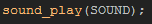

Tutorial
Page 13 of 13
What Next?
Your game is finished, and it's looking good, but... could it be better? Well, with a little bit of effort and imagination i'm sure it could!
For example, the game has no sound, so how about adding some sound effects into the instances in your game to liven things up? The assets folders that come with this tutorial have some basic ones to get
you started, and all you will have to do is use the code:

Replace "SOUND" for the sound resource that you wish to play (sounds are added exactly the same way as sprites and backgrounds) and have that code in an appropriate place, like the collision events with the ball,
or the room start event of the control object etc... Sound is an important part of game making too, so don't neglect it!
Another thing you could do is have a "powerup" that makes the ball object faster (for example). We will not give you the code for such a thing in this tutorial, but we will give you the outline of how to do it, and you
are sure to be able to work it out by yourself! to start with make a powerup instance, and have it travel down the screen every step, with a check to see if has reached the bottom so that it can destroy itself if it has.
Next you will want to create a variable in the ball object to control it's maximum speed. At the moment the game has a constant ball speed of 5, so store that in a variable and reference the variable in all other events.
You would then have a collision event in the powerup with the bat object where you can set the speed (and the maximum speed variable) of the ball to something else (remember "with"?). You could even set an alarm
in the control object in the same way to reset the speed of the ball to 5 again after a set time...
What about other power ups? Multi ball? Larger bat? Or faster or slower bat? Maybe you could add more rooms and move from one to the other when all the bricks are gone rather than just replay the same room all
the time (you can control this with a global variable)?
As you can see, the only limit to this is your imagination! Good luck and happy game making!
Click on the Next button to go to the next page of the tutorial.